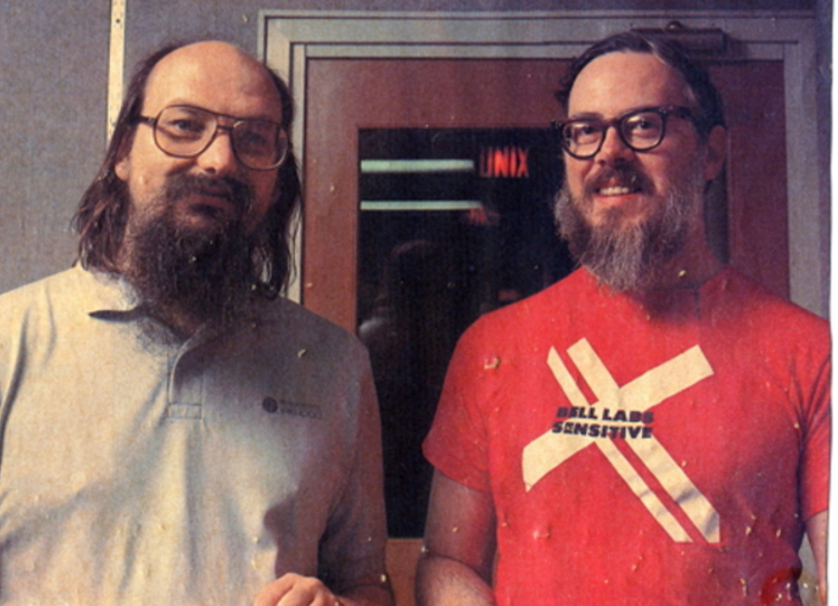

HISTORY OF C
Where's standard?
C was originally developed by Dennis Ritchie between 1969 and 1973 at Bell Labs, and used to re-implement the Unix operating system.
It has since become one of the most widely used programming languages of all time, with C compilers from various vendors available for the majority of existing computer architectures and operating systems. C has been standardized by the American National Standards Institute (ANSI) since 1989 (see ANSI C) and subsequently by the International Organization for Standardization (ISO).
C is an imperative procedural language. It was designed to be compiled using a relatively straightforward compiler, to provide low-level access to memory, to provide language constructs that map efficiently to machine instructions, and to require minimal run-time support. Despite its low-level capabilities, the language was designed to encourage cross-platform programming. A standards-compliant and portably written C program can be compiled for a very wide variety of computer platforms and operating systems with few changes to its source code. The language has become available on a very wide range of platforms, from embedded microcontrollers to supercomputers.
EARLY DEVELOPMENTS
Uses and libraries
The development of C started in 1972 on the PDP-11 Unix system and first appeared in Version 2 Unix. The language was not initially designed with portability in mind, but soon ran on different platforms as well: a compiler for the Honeywell 6000 was written within the first year of C's history, while an IBM System/370 port followed soon. Also in 1972, a large part of Unix was rewritten in C. By 1973, with the addition of struct types, the C language had become powerful enough that most of the Unix kernelwas now in C.
C is widely used for system programming in implementing operating systems and embedded system applications, because C code, when written for portability, can be used for most purposes, yet when needed, system-specific code can be used to access specific hardware addresses and to perform type punning to match externally imposed interface requirements, with a low run-time demand on system resources.
C can also be used for website programming using CGI as a "gateway" for information between the Web application, the server, and the browser. C is often chosen over interpreted languages because of its speed, stability, and near-universal availability.
One consequence of C wide availability and efficiency is that compilers, libraries and interpreters of other programming languages are often implemented in C. The reference implementations of Python, Perl and PHP, for example, are all written in C.
The most common C library is the C standard library, which is specified by the ISO and ANSI C standards and comes with every C implementation (implementations which target limited environments such as embedded systems may provide only a subset of the standard library). This library supports stream input and output, memory allocation, mathematics, character strings, and time values. Several separate standard headers (for example, stdio.h) specify the interfaces for these and other standard library facilities.
HISTORY OF C++
C with classes
In 1979, Bjarne Stroustrup, a Danish computer scientist, began work on "C with Classes", the predecessor to C++.The motivation for creating a new language originated from Stroustrup's experience in programming for his Ph.D. thesis. Stroustrup found that Simula had features that were very helpful for large software development, but the language was too slow for practical use, while BCPL was fast but too low-level to be suitable for large software development. When Stroustrup started working in AT&T Bell Labs, he had the problem of analyzing the UNIX kernel with respect to distributed computing.
In 1983, "C with Classes" was renamed to "C++" (++ being the increment operator in C), adding new features that included virtual functions, function name and operator overloading, references, constants, type-safe free-store memory allocation (new/delete), improved type checking, and BCPL style single-line comments with two forward slashes (//). Furthermore, it included the development of a standalone compiler for C++, Cfront.
LIBRARY, WITH C
What it's made of...
The C++ standard consists of two parts: the core language and the standard library. C++ programmers expect the latter on every major implementation of C++; it includes vectors, lists, maps, algorithms (find, for_each, binary_search, random_shuffle, etc.), sets, queues, stacks, arrays, tuples, input/output facilities (iostream, for reading from and writing to the console and files), smart pointers for automatic memory management, regular expression support, multi-threading library, atomics support (allowing a variable to be read or written to by at most one thread at a time without any external synchronisation), time utilities (measurement, getting current time, etc.), a system for converting error reporting that doesn't use C++ exceptions into C++ exceptions, a random number generator and a slightly modified version of the C standard library (to make it comply with the C++ type system).
C++ is often considered to be a superset of C, but this is not strictly true. Most C code can easily be made to compile correctly in C++, but there are a few differences that cause some valid C code to be invalid or behave differently in C++. For example, C allows implicit conversion from void* to other pointer types, but C++ does not (for type safety reasons). Also, C++ defines many new keywords, such as new and class, which may be used as identifiers (for example, variable names) in a C program.
HISTORY OF C#
Anders Hejlsberg's C++ ++
Microsoft had considered keeping the name "Cool" as the final name of the language, but chose not to do so for trademark reasons. By the time the .NET project was publicly announced at the July 2000 Professional Developers Conference, the language had been renamed C#, and the class libraries and ASP.NET runtime had been ported to C#.

Since the release of C# 2.0 in November 2005, the C# and Java languages have evolved on increasingly divergent trajectories, becoming somewhat less similar. One of the first major departures came with the addition of generics to both languages, with vastly different implementations. C# makes use of reification to provide "first-class" generic objects that can be used like any other class, with code generation performed at class-load time.
Since the release of C# 2.0 in November 2005, the C# and Java languages have evolved on increasingly divergent trajectories, becoming somewhat less similar. One of the first major departures came with the addition of generics to both languages, with vastly different implementations. C# makes use of reification to provide "first-class" generic objects that can be used like any other class, with code generation performed at class-load time.
STANDARDING AND LICENSING
Microsoft Corporation

In August 2001, Microsoft Corporation, Hewlett-Packard and Intel Corporation co-sponsored the submission of specifications for C# as well as the Common Language Infrastructure (CLI) to the standards organization Ecma International. In December 2001, ECMA released ECMA-334 C# Language Specification. C# became an ISO standard in 2003 (ISO/IEC 23270:2003 - Information technology — Programming languages — C#). ECMA had previously adopted equivalent specifications as the 2nd edition of C#, in December 2002. In June 2005, ECMA approved edition 3 of the C# specification, and updated ECMA-334. Additions included partial classes, anonymous methods, nullable types, and generics (somewhat similar to C++ templates).
HISTORY OF JAVA
Oak's green team

James Gosling, Mike Sheridan, and Patrick Naughton initiated the Java language project in June 1991. Java was originally designed for interactive television, but it was too advanced for the digital cable television industry at the time. The language was initially called Oak after an oak tree that stood outside Gosling's office. Later the project went by the name Greenand was finally renamed Java, from Java coffee. Gosling designed Java with a C/C++-style syntax that system and application programmers would find familiar.
Sun Microsystems released the first public implementation as Java 1.0 in 1995. It promised "Write Once, Run Anywhere" (WORA), providing no-cost run-times on popular platforms. Fairly secure and featuring configurable security, it allowed network- and file-access restrictions. Major web browsers soon incorporated the ability to run Java applets within web pages, and Java quickly became popular. The Java 1.0 compiler was re-written in Java by Arthur van Hoff to comply strictly with the Java 1.0 language specification.
IMPLEMENTATION JAVA PLATAFORM
Portable stuff
One design goal of Java is portability, which means that programs written for the Java platform must run similarly on any combination of hardware and operating system with adequate runtime support. This is achieved by compiling the Java language code to an intermediate representation called Java bytecode, instead of directly to architecture-specific machine code. Java bytecode instructions are analogous to machine code, but they are intended to be executed by a virtual machine (VM) written specifically for the host hardware. End users commonly use a Java Runtime Environment (JRE) installed on their own machine for standalone Java applications, or in a web browser for Java applets.

Oracle Corporation is the current owner of the official implementation of the Java SE platform, following their acquisition of Sun Microsystems on January 27, 2010. This implementation is based on the original implementation of Java by Sun. The Oracle implementation is available for Microsoft Windows (still works for XP, while only later versions currently officially supported), macOS, Linux, and Solaris. Because Java lacks any formal standardization recognized by Ecma International, ISO/IEC, ANSI, or other third-party standards organization, the Oracle implementation is the de facto standard.